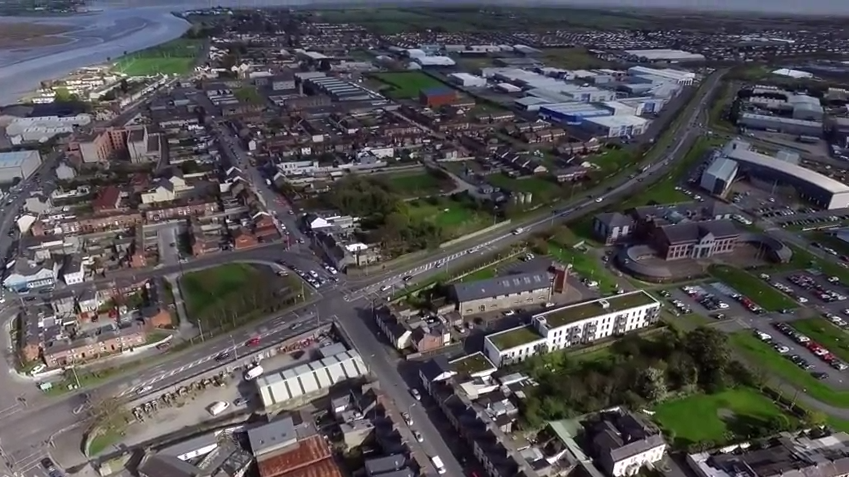

Paris
Capitale

Insérez description...
Dundalk
Ville

Dundalk est une ville du comté de Louth en Irlande. Elle fut fondée en 1189.
Dundalk se trouve près de la frontière avec l'Irlande du Nord à 80 km au nord de Dublin. Son nom provient de Dún Dealgan qui signifie le « fort de Dalga » en irlandais, qui est associé au guerrier mythique Cúchulainn.
Grenoble
Capitale des Alpes

Grenoble est la commune-centre de la deuxième agglomération de la région Auvergne-Rhône-Alpes en nombre d'habitants,
après celle de Lyon, et la troisième commune de cette région, derrière Lyon et Saint-Étienne.
Son agglomération de 450 000 habitants est également la plus grande métropole des Alpes,
devant Innsbruck dont l'agglomération ne compte que 300 000 habitants, et Bolzano, ce qui lui vaut le surnom,
en France, de « capitale des Alpes ».
https://fr.wikipedia.org/wiki/Grenoble
https://fr.wikipedia.org/wiki/Grenoble
Challans
Capitale du Marais breton vendéen

Challans est une commune française située dans le département de la Vendée en région Pays de la Loire.
Capitale du Marais breton vendéen,
la ville compte 20 133 habitants en 2015 et 25 544 habitants dans son aire urbaine selon l'Insee en 2010.
San Francisco
Ville

San Francisco est une ville portuaire dans l'Etat de Californie aux Etats-Unis. La ville à la réputation d'être une ville ouverte, de part sa tradition de tolérance qui a permis l'émancipation de plusieurs minorités
Brest
Capitale
Insérez description...
Brest
Capitale
Insérez description...
Ottawa
Capitale du Canada

"Ottawa est la capitale du Canada et se trouve dans la province de l'Ontario. Elle se trouve à proximité de la ville de Montréal et de la frontière des Etats-Unis. Elle a une superficie de 2 790 km² et une population de 994 837 (chiffre de 2017)"
Bordeaux
Ville

Bordeaux est une commune du Sud-Ouest de la France. Capitale de la Gaule aquitaine sous l'Empire romain pendant près de 200 ans. Puis du Duché d'Aquitaine, de la province royale de Guyenne et du siècle des Lumières, elle est aujourd'hui le chef-lieu et la préfecture de la région Nouvelle-Aquitaine, du département de la Gironde et le siège de Bordeaux Métropole.
Brest
Capitale
Insérez description...
Brest
Capitale
Insérez description...
Brest
Capitale
Insérez description...
Mulhouse
Capitale

Mulhouse est une commune française située dans la collectivité européenne d'Alsace. Elle est la première commune du Haut-Rhin en nombre d'habitants, la deuxième d'Alsace (après Strasbourg) et la quatrième agglomération du Grand Est. 56 % des habitants de l'agglomération résident dans sa banlieue, provoquant une importante et croissante mobilité pendulaire. Son aire urbaine couvre 286 730 habitants(40 % de la population du Haut-Rhin) et sa zone d'emploi regroupe 431 337 habitants.
Bruxelles
Belgique

Bruxelles ou la ville de Bruxelles est une commune de Belgique de 183 287 habitants, capitale de la Belgique, siège de la Communauté française et de la Communauté flamande, ainsi que siège de plusieurs institutions de l'Union européenne.